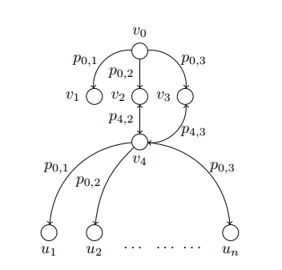

Identifying Critical nodes on Twitter
This is part 1 of a 3-part series on the study of critical nodes in a network.
Links to: part 2 and part 3
Part of this work is published in 2020 IEEE/WIC/ACM International
Joint Conference on Web Intelligence and Intelligent Agent Technology (WI-IAT) and can be read here.
Direct download link of the Thesis
- If you are interested in the topic, another paper might interest you as well Measuring the Impact of Influence on Individuals:
Roadmap to Quantifying Attitude that appeared in 2020 IEEE/ACM International Conference on Advances in Social Networks Analysis and Mining (ASONAM). (This was another paper
by our research lab. My contribution in this was limited to a couple of graph visualizations, the actual research was done by Xiaoyun and Madhavan). While the critical nodes
paper studies the problem of dealing with the spread of misinformation in Online Social Networks (OSN), the second paper, Quantifying Attitude, deals with studying the problem
of creation of echo chambers in OSNs.
Given a social network graph, like twitter, and an integer k, identify k nodes (user accounts) whose absence will maximally disrupt the flow of misinformation in the network, assuming the source of misinformation is not known.
Suppose someone gave you the information that there might be certain nodes in a network that could try to spread misinformation in the network, and your job was to
pre-emptively remove a certain fixed number of nodes, so that the spread of misinformation in the network was minimized. Then which nodes would you remove,
given that you did not know the exact nodes that were going to spread the misinformation?
(Author's note 1: I am using "misinformation" as a placeholder. This series is written assuming we want to stop misinformation from spreading in a social network. But we can
use the same reasoning for the diffusion of any entity in a network: information in a group of people, a large scale medical infection, virus in computer networks etc.).
(Author's note 2: With the recent advances in ML/AI it might easy to conflate this problem with a ML one. That is not what we are trying to do. We are framing the problem as a
pure graph problem. To be somewhat precise, the problem is this: Given a directed graph, G = (V, E), where ∀ e ∈ E, e is
assigned a probability puv ∈ [0,1] where puv represents the probability of reaching v when at u.
Assume an unknown set of nodes S ⊂ V that are going to spread misinformation in G. Then the
problem is to find a set of nodes T, where T ⊂ V ∖ S, |T| = k, such that the spread of misinformation in a new graph
G' = (V', E') - that is created by removing the set of nodes T and the edges incident upon it from the earlier graph G - is minimized
∀ S ⊂ V'. Just to give a scale of the numbers, in the example that we will be considering, |V| = 600,000, |E| = 990,000,
k = 20).
As of the 25th of August 2019, there was a demonstration ongoing in Hong Kong against
an extradition bill that had been proposed by the government of Hong Kong. During the demonstrations, the government of China was accused of spreading misinformation by creating multiple fake
state-backed twitter accounts that tweeted incorrect information about the demonstrations. These accounts tried to paint the protestors in bad light, by primarily showing them
as more violent than they actually were. Twitter later released a list of 936 accounts that it had detected (and later blocked) to be state-backed accounts created by PRC whose
sole purpose was to undermine the legitimacy and political
positions of the protest movement on the ground. Twitter also reported that they shut down a network of approximately 20,000 other spammy/fake twitter accounts
that were created as a result of them blocking the above 936 accounts.
The scale of this problem cannot be overstated. These kinds of attempts at spreading misinformation on social media have become much too common and as the pervasiveness of social media increases, the problem only promises to keep getting worse.
Although Twitter did end up banning many of the fake accounts, there are 2 major problems with the approach they followed:
1) It was not completely proactive. By the time the account was detected as a fake account, and subsequently blocked, the account might have already succeeded in its goal of
influencing people with its tweets.
2) Banning an account is a temporary solution. As was seen in this case, banning an account just leads to other accounts being created that serve the same purpose.
We need a better strategy to curtail the spread of misinformation than to reactively ban them as and when they are detected by the algorithms that Twitter might be running.
We introduce the notion of critical nodes. Intuitively, critical nodes are the nodes that are critical/important to the spread of misinformation in a given network. This implies that removal of these nodes from the network would lead to maximal disruption in the spread of misinformation. So if we can inform/isolate these nodes from getting influenced by the misinformation, we can drastically reduce the spread of misinformation in the network.
Consider the following simplified example:

Objective 1: Identify one critical node. Remove all incident edges on this critical node,
Objective 2: Identify one source node that can reach the largest number of nodes in the resulting graph.
An edge from v0 to v2 implies that v2 follows v0 on twitter. p0,2 is the
probability that a tweet of v0 is retweeted by v2. For the sake of this example, assume every probability to be 1. That is,
every tweet sent out by a user is read by and retweeted by every one the user's followers. We say that a user is influenced by a tweet if the user ends up
retweeting/replying/quoting the original tweet. In this scenario, if the objective was to influence the maximum number of users, I would select the node v0
as the source to spread the misinformation since I could reach all of the nodes in the network by selecting v0.
Coming to our objective 1 that we stated above, a natural instinct in this case would be then
to select v0 as the critical node as well. But now let's consider Objective 2. Note that if we selected v0 as the critical node and
removed it from the graph, choosing a source node, v3 for example, would still end up influencing n + 1 nodes (u1 to un
+ v4).
Now note what happens if we select v4 as the critical node instead as the node in Objective 1. Removing this node disconnects most of the nodes from one
another. Coming to objective 2 now, the node that can now influence the largest number of nodes is v0 which is only 3 (v1,
v2, and v3). Compare this with when we selected v0 as the critical node. Hence choosing v4 as
the critical node is the correct option over here.
So the idea is that if we isolate v4 from the misinformation, we have maximally disrupted the spread of misinformation in the network from any
possible node. Identifying critical nodes such as these forms the basis of our algorithm.
1) The version of the algorithm described above is completely independent of the source of the misinformation.
This means that the computation of the critical nodes in any network can be done before the spread of
misinformation has been even detected. This opens up many new possibilities of pre-emptive action against any
adversary planning a co-ordinated attempt at spreading misinformation in the network.
2) Instead of trying to chase after the fake accounts, we can now focus on the critical nodes that we want to
protect. This becomes our first line of defense. Once we have ensured that the critical nodes have been
isolated, we can then run other algorithms to detect which accounts are acting as the source of the
misinformation.
For the purpose of this experiment, tweets mentioning Hong Kong were filtered using the Tweepy library written in Python and the Twitter API.
The Python code for the streaming process can be found here.
Tweets were collected from Tue Aug 13 21:30:14 +0000 2019 to Thu Aug 15 13:08:30 +0000 2019. In all, around 1.2
million tweets were collected.
A graph was created from the tweets. Graph was created in the following manner: there are 3 actions that any user
can take from a tweet: retweet, retweet with comment, and reply. All 3 actions are perceived as engaging with the
tweet. An edge was created from a user v to a user w if w took any of the above stated 3
actions on v's tweet. The graph created in this manner contained a total of 607525 nodes and 994220 edges.
The JAVA code for the parsing of the Tweet JSON object and the
subsequent creation of the graph can be found here.
The version of our algorithm applied here does not require the knowledge of the source nodes spreading the
misinformation provided to us. The C++
code that we used for identifying the critical nodes in the network can be found here.
Observation 1) The nodes identified as critical by the algorithm do intuitively make sense.
Among the top 20 were political scientists, analysts, activists, and commentators fom Japan, Europe, and the United States. They also included accounts belonging to activists, correspondents, and locals - all of these people were living in Hong Kong or were reporting from there. There was a news aggregator site, Washington Examiner, also among the top 20. The critical nodes also included two major political figures - Donald Trump and Hillary Clinton. The point of this example is to demonstrate that the algorithm picks nodes whose selection intuitively makes sense - these nodes identified can in fact be considered critical to the spread of information in the network.
The below table shows some of the identified nodes along with other user details

Observation 2) Our algorithm also identified, as critical, some other nodes that might not intuitively seem important to the information diffusion
These are the user accounts that are unverified. It is difficult to comment on the user accounts based on their descriptions alone. It is difficult to gauge the identity or the leanings of these accounts, making them more susceptible to tweeting out misinformation. Some screen_names have been kept hidden in accordance with Twitter's user policy.
The below table shows some of the identified nodes along with other user details
Observation 3) Accounts that are identified as critical might belong to the party trying to spread misinformation
One of the nodes identified as critical was the account belonging to GlobalTimesNews. This is a state media news outlet based in China and comes under the umbrella of the Chinese media censorship.
But what if we do know the source of the misinformation spread? Can we then better estimate the nodes that are critical to the spread of the information? As it turns out, we can.
We will will be covering this in part 2.
[2] Influence Maximization: Near-Optimal Time Complexity Meets Practical Efficiency
[3] Disrupting diffusion: Critical nodes in network
FootNote 1: One of the details that we glanced over was the probability values that are used. In the example in part 1, we assumed for simplicity purposes that if v0 sent out a tweet, then every follower of v0 acted upon that tweet (either through retweeting, replying, or quoting) with probability 1. Of course, that is not the case in the real world. For this particular study, we assumed the probability of a user v taking an action on every tweet to be 1/indegree(v). This means that if a vertex v has an indegree of 4, then v will be influenced by the information shared by each of the 4 vertices with a probability of 1/4. In the real world, this probability will vary and will not be the same for all of the users. Computing this probability exactly is way more complicated than the scope of this discussion permits, and we will hence not be going into that here.